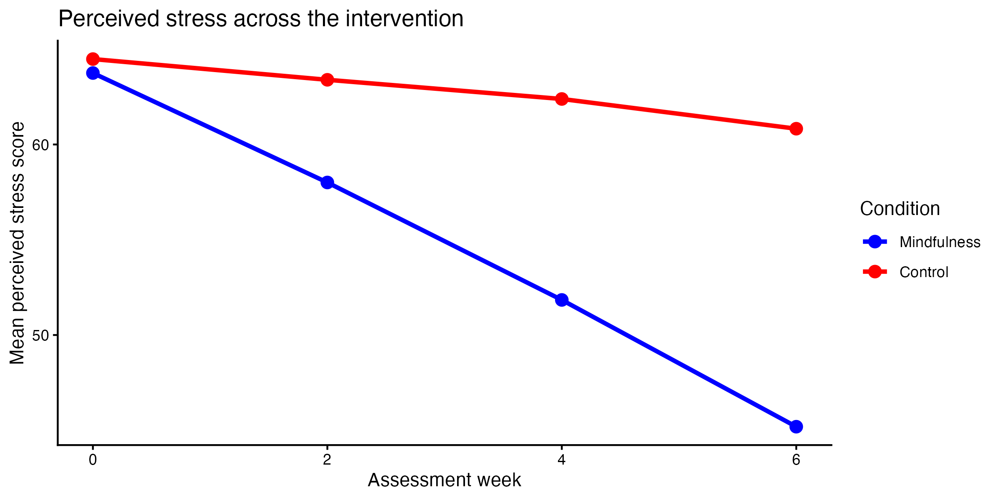

Researchers examined whether a six-week mindfulness program reduced perceived stress. Forty adults were assigned to either a mindfulness intervention or a waitlist control group. Participants completed a perceived-stress measure at baseline and at Weeks 2, 4, and 6. Scores can range from 0 to 100, with higher scores indicating greater stress.
Your goal is to import, inspect, clean, recode, filter, and summarize the data so that you can reproduce (exactly!) the target figure below. All features of the graph need to be exactly the same as the image below to receive full credit!
The data (in the data folder) is called mindfulness_stress_messy.csv
Hint 1: The cleaned data that you summarize to create the graph should have 139 rows.
Hint 2: The y axis is a mean stress score.

The file mindfulness_stress_messy.csv contains:
participant_id: anonymous participant IDage: participant age in yearscondition: intervention conditionassessment: assessment occasionstress_rating: perceived-stress scoreuse_data: whether the participant’s data should be includedThe dataset includes inconsistent categorical labels, numbers stored as text, missing-value codes, exact duplicates, excluded participants, and impossible stress scores.